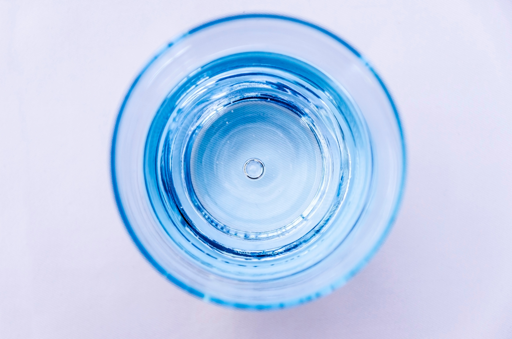

- • Fenomena "air keluar jernih tapi menguning setelah 1-2 jam di toren" terjadi akibat reaksi oksidasi ion Besi Ferro (Fe2+) menjadi endapan Ferri Hidroksida (Fe3+).
- • Wilayah Bandung Selatan (Baleendah, Dayeuhkolot), Bandung Timur (Gedebage), dan Cimahi memiliki lapisan tanah lempung vulkanik dengan deposit Fe dan Mn yang tinggi.
- • Filter cartridge katun biasa (spund bond) tidak mampu menyaring besi terlarut karena ukuran ion jauh lebih kecil dari mikron filter.
- • Solusi teruji: Kombinasi tabung FRP berisi Manganese Greensand Plus / Ferrolite yang mengkatalisis oksidasi instan, disempurnakan dengan Karbon Aktif Granular (GAC).
1. Karakteristik Geologi Cekungan Bandung & Akifer Tanah
Banyak warga Bandung yang mengeluhkan hal serupa: "Kenapa waktu pertama kali pompa sumur bor dinyalakan airnya jernih bening, tapi begitu ditampung di toren setengah hari, airnya berubah jadi coklat kemerahan dan dinding bak mandi berkerak kuning berkarat?"
Secara geologis, dataran tinggi Bandung merupakan bekas danau purba (Danau Bandung Purba) yang dikelilingi oleh gugusan gunung api kuarter seperti Tangkuban Parahu, Malabar, dan Patuha. Endapan sedimen danau dan batuan piroklastik vulkanik tersebut secara alami kaya akan mineral logam, khususnya Besi (Ferrum / Fe) dan Mangan (Manganum / Mn).
2. Proses Kimia: Mengapa Air Menguning Setelah Diendapkan?
Di dalam akuifer tanah yang dalam (kedalaman sumur 30 hingga 120 meter), kondisi air bersifat anaerobik (tanpa oksigen bebas). Pada kondisi ini, besi berada dalam bentuk ion terlarut Ferro (Fe2+) yang sama sekali tidak berwarna alias kasat mata terlihat sangat jernih.
Namun, ketika air dipompa naik ke permukaan dan masuk ke toren penampungan, air mengalami kontak dengan oksigen di udara (aerasi alami). Terjadilah reaksi oksidasi cepat:
4Fe2+ + O2 + 10H2O → 4Fe(OH)3 (Endapan Merah/Kuning) + 8H+
Partikel Fe(OH)3 inilah yang menimbulkan warna kuning kecoklatan, rasa licin atau lengket, dan bau amis karat yang sangat khas. Jika kadar Mangan (Mn) juga tinggi, endapan akan berwarna coklat tua hingga kehitaman seperti jelaga berminyak.
3. Kerugian Akibat Air Berkarat Bagi Hunian & Komersial
Membiarkan air sumur kuning terus mengalir ke instalasi pipa bangunan dapat mendatangkan kerugian finansial yang signifikan:
- Pakaian Putih Menguning: Saat mencuci baju di mesin cuci, ion besi mengendap pada serat kain katun, menghasilkan noda kuning permanen yang sulit hilang meski menggunakan pemutih.
- Penyumbatan Jalur Pipa & Water Heater: Akumulasi sludge lumpur karat menyumbat lubang nozzle shower, kran wastafel, dan memperpendek usia elemen pemanas air (electric/gas water heater).
- Noda Kerak Keramik & Sanitary Ware: Wastafel porselen dan bathtub hotel akan mengalami disolusi noda karat yang merusak estetika dan sulit dibersihkan dengan sabun pembersih biasa.
- Iritasi Kulit & Mata: Mandi dengan air kaya logam teroksidasi dapat memicu gatal-gatal pada kulit sensitif dan anak-anak.
4. Solusi Rekayasa: Sistem Tabung FRP Media Katalis NOTO
Banyak pemilik rumah mencoba mengatasi masalah ini dengan memasang housing filter catridge spun 10 inch atau 20 inch. Hasilnya? Catridge berubah hitam pekat dalam 2 hari dan debit air langsung mengecil drastis. Ini wajar, karena catridge hanya menyaring partikel kasar, bukan mengkatalisis ion terlarut.
PT Noto Water Envirotech merancang sistem pengolahan multi-barrier yang telah terbukti di ratusan proyek perumahan dan industri di Jawa Barat:
Rancang Bangun Sistem Filtrasi Tabung FRP Air Sumur Bor Karat
5. Tips Perawatan & Rutinitas Backwash
Kelebihan utama sistem tabung FRP bertekanan NOTO adalah kemudahan perawatannya. Dilengkapi dengan 3-Way Multiport Valve (atau opsi Automatic Digital Valve), pengguna cukup memutar tuas ke posisi BACKWASH selama 10-15 menit sekali dalam seminggu. Aliran air terbalik akan membuang seluruh kotoran karat yang terperangkap keluar melalui pipa pembuangan, mengembalikan performa media seperti baru tanpa perlu bongkar tabung.
Air Sumur Anda Mengalami Gejala yang Sama?
Jangan biarkan pipa dan sanitary ware rumah Anda rusak. Tim teknis NOTO Water siap melakukan survey lokasi dan pengetesan sampel air gratis untuk area Bandung Raya & sekitarnya.